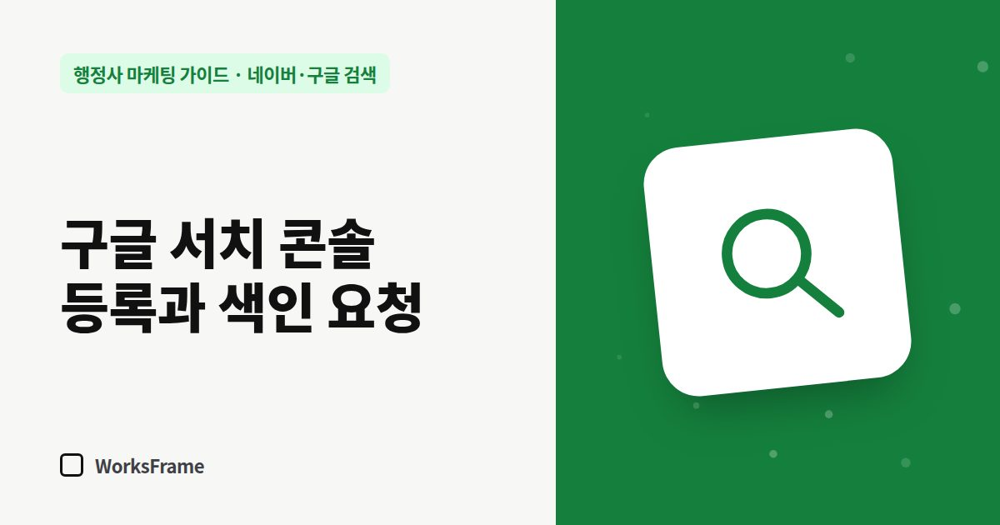

네이버·구글 검색
구글 서치 콘솔 등록과 색인 요청 — 행정사 홈페이지를 구글에 알리는 법
한 줄 답
구글 서치 콘솔에 홈페이지를 등록하고 사이트맵을 제출하세요. 새 글은 ‘URL 검사 → 색인 생성 요청’으로 알리고, 매달 ‘실적’ 보고서에서 어떤 검색어로 들어왔는지 보세요.

구글은 네이버보다 새 사이트를 스스로 잘 찾아오지만, 서치 콘솔에 등록하면 어떤 페이지가 수집됐는지, 어떤 검색어로 들어오는지를 볼 수 있습니다. 구글 비즈니스 프로필과도 짝을 이루는 기본 도구입니다.
등록 순서
- 구글 서치 콘솔에서 내 사이트 추가 — 처음이라면 ‘URL 접두어’ 방식이 쉽습니다. 홈페이지 주소를 그대로 넣으면 됩니다.
- 내 사이트가 맞는지 확인 — 구글이 주는 확인 파일을 홈페이지에 올리거나, 확인 코드 한 줄을 넣습니다. (도메인 업체 설정으로 확인하는 ‘도메인’ 방식도 있지만 조금 더 어렵습니다.)
- 왼쪽 Sitemaps 메뉴에서
sitemap.xml주소를 넣고 제출
새 글을 올렸을 때: URL 검사
- 상단 검색창에 새 글 주소 입력
- “URL이 Google에 등록되어 있지 않음”이면 색인 생성 요청
- 요청했다고 바로 반영되지는 않지만, 새 업무 안내 글을 알리는 데 유용합니다
매달 볼 보고서 두 개
| 보고서 | 보는 것 |
|---|---|
| 실적 | 어떤 검색어로 노출·클릭됐는지, 어떤 페이지로 들어왔는지 |
| 페이지(색인 생성) | 수집이 안 된 페이지와 그 이유 |
실적 보고서의 검색어 목록은 다음 글감의 보물창고입니다. 노출은 많은데 클릭이 적은 검색어가 있다면, 그 주제로 제목을 더 명확히 고치거나 새 글을 쓰세요.
구글 AI 요약 시대에도 필요한 이유
구글 검색 결과에 AI 요약이 나오는 검색어에서는 상위 페이지로 가는 클릭이 줄어든다는 분석도 있습니다(Ahrefs 분석, 2025년 12월 데이터 기준 1위 클릭률 약 58% 감소). 그래도 AI 요약이 참고하는 것은 결국 색인된 웹 문서입니다. 수집되지 않으면 인용될 기회도 없습니다. (AI 요약에 인용되려면)
자주 묻는 질문
네이버 서치어드바이저만 해도 되지 않나요?
네이버와 구글은 따로 수집합니다. 외국인 고객, 기업 고객, AI 검색까지 생각하면 둘 다 등록하는 것이 좋습니다.
색인 요청을 매일 반복하면 더 빨라지나요?
같은 페이지를 반복 요청해도 빨라지지 않습니다. 새 글이나 크게 고친 글만 요청하세요.